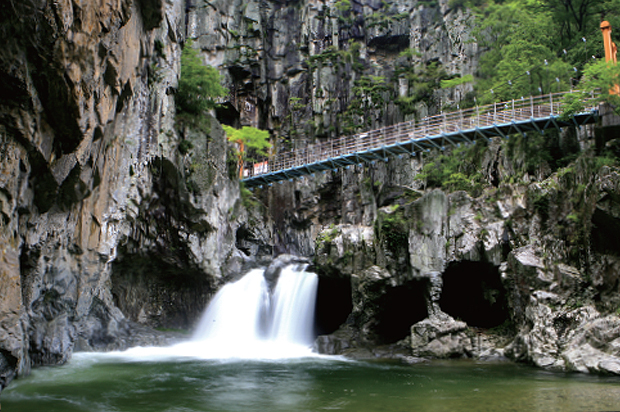

|  |
| 번호 | 8 |
|---|---|
| 분류 | 관광 |
| 장소 번호 | A0008 |
| 장소명 | 내연산 12폭포 비경 |
| 장소 위치 설명 | 경상북도 포항시 북구 송라면 중산리 |
| 장소 상세 설명 | 경북 포항시 북구 송라면의 동북쪽에 위치한 내연산(710m)은 12개의 폭포를 간직하고 있으며, 해발고도만 따지면 그다지 높은 산은 아니다. 하지만 해안 가까이에 솟아올라 있어 내륙의 엇비슷한 높이의 산보다는 휠씬 더 높고 우뚝해 보인다. 이 내연산 자락을 굽이굽이 감돌며 40리 가량 흘러내리는 골짜기가 바로 청하골이다. 내연산말고도 문수산(622m), 향로봉(930m), 삿갓봉(718m), 천령산(775m)등의 높직한 준봉들이 반달모양으로 둘러져 있어서 청하골은 여느 심산유곡 못지않게 깊고 그윽하다. 특히 이곳에는 폭포와 소(沼)가 많기도 하거니와 이곳처럼 다양한 형태의 폭포를 한자리에서 볼 수 있는 곳도 달리 찾기가 어렵다. |
| 위치 |